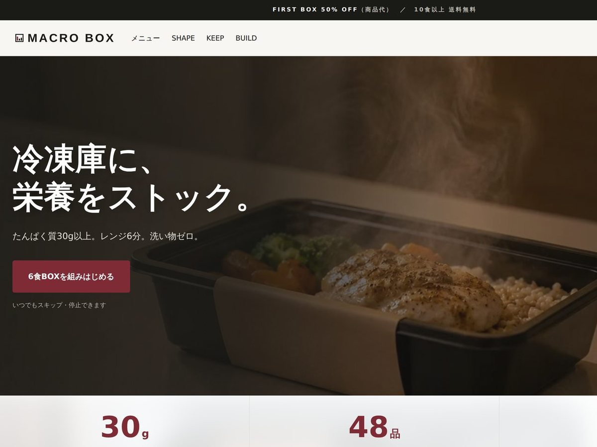
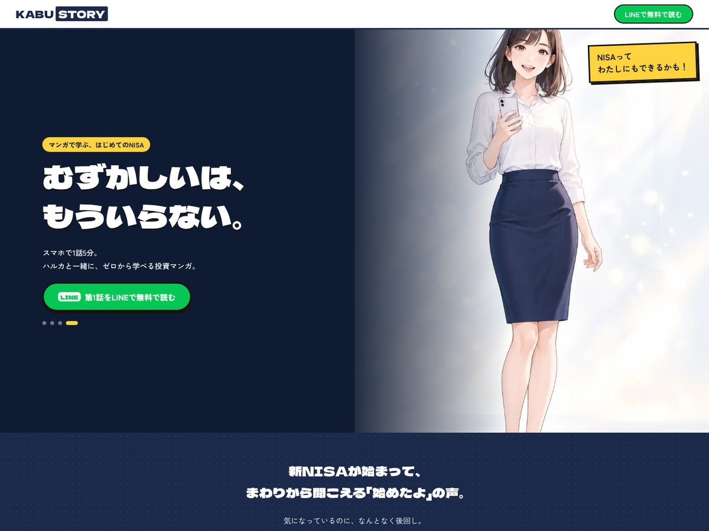
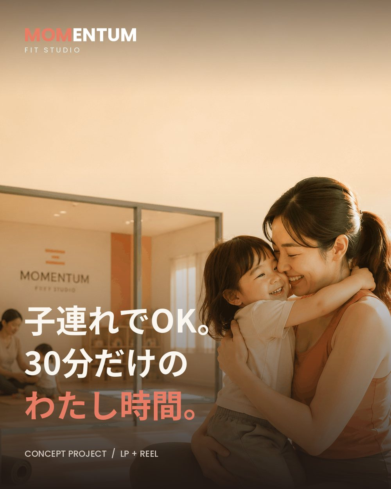
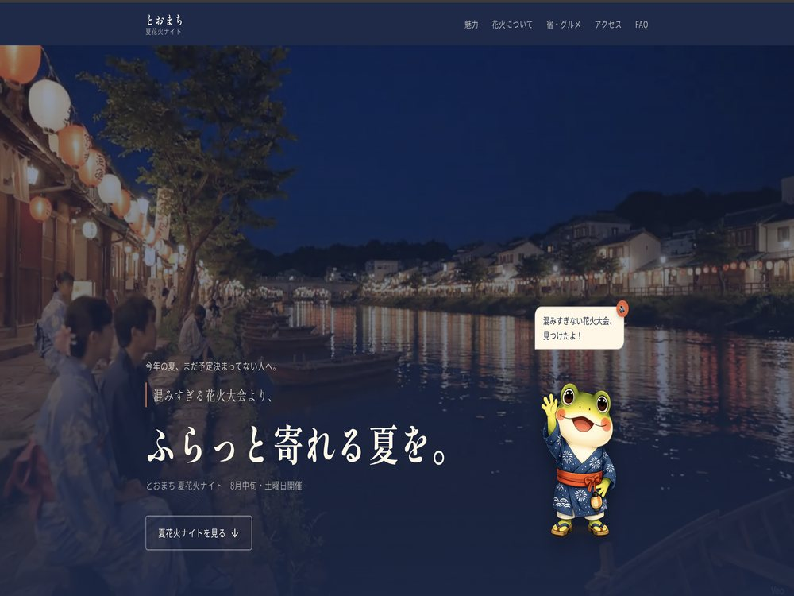
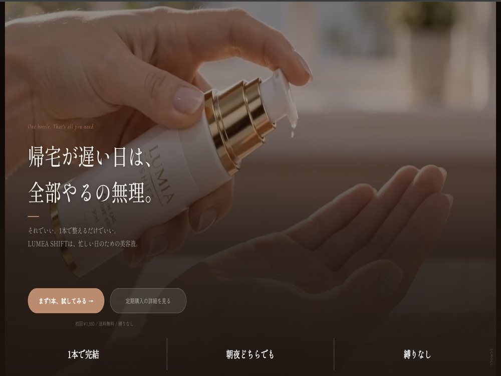
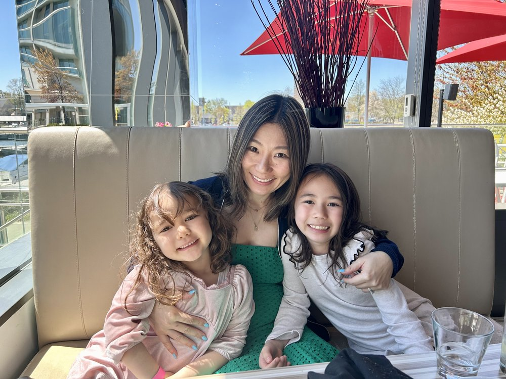

広告動画・キャラクター・LPを、企画から実装まで一人で。日本語・English・Españolで、「きれいなページ」ではなく、お客様が動くページを作ります。
Ad video, characters and landing pages — concept to code, by one person, in Japanese, English and Spanish. Not just beautiful pages: pages that move people to act.
ひとつの物語で、つなぎます。One story, three languages.
広告で言っていることと、ページで言っていることがズレる。それが離脱のいちばんの原因です。リール広告・動画とLPを一人で作るので、最初の3秒から申し込みまで、同じ約束のままつなげられます。
When the ad promises one thing and the page says another, people leave. I make the Reel and the page myself, so the promise stays the same from the first three seconds to the sign-up.
むずかしいテーマや情報が多いページほど、人は途中で読むのをやめます。オリジナルキャラクターやマンガで共感をつくり、読み進めたくなる流れを設計します。AI画像でも、キャラの見た目をそろえて作れます。
The harder or denser the topic, the sooner people stop reading. Original characters and manga create empathy and pull readers forward — and I can keep AI-generated characters consistent from image to image.
日本語・English・Españolで、翻訳ではなくそれぞれの読み手に合わせたコピーを書きます。予約フォーム、Stripe決済、GA4・GTMの計測まで、実際に動く状態で納品します。
Japanese, English and Spanish — written for each reader, not just translated. Booking forms, Stripe checkout and GA4 / GTM tracking are delivered working, not mocked up.

冷凍ミール宅配のECサイト。同じサービスをWordPress版と静的サイト版の2つで作り、実装の違いを比較しました。カート・価格計算を自作し、Stripeでの決済とGA4／GTM／Clarityでの計測まで実際に動いています。
An online store for a frozen meal subscription, built twice — once on WordPress, once as a static site — to compare the two stacks. Custom cart and pricing, live Stripe checkout, and GA4 / GTM / Clarity measurement.
ケーススタディを読む →Read the case study → 02
マンガでNISAを学ぶサービスのLP。主人公の感情の変化をそのまま導線にし、AIで生成したキャラクター16点と、HTML/CSSで組んだ縦読みマンガで「むずかしい」をほどきました。
A landing page for a service that teaches Japan's NISA investment basics through manga. The heroine's change of heart is the conversion path, told with sixteen AI-generated characters and a scrolling comic built in HTML/CSS.
ケーススタディを読む →Read the case study → 03
Instagramのリール広告から無料体験予約までの導線を、企画・リサーチ・ブランド設計・デザイン・コーディング・予約フォームまで一貫して制作。日英バイリンガル対応の女性専用ジムのLPです。
A complete customer journey — from an Instagram Reel ad to a booked trial session. Research, brand, design, front-end and booking form for a bilingual women-only fitness studio.
ケーススタディを読む →Read the case study → 04
架空の観光地を舞台にした花火イベントのLP。オリジナルキャラクター「トーマくん」の設計から、AI動画、予約フォーム、SNSクリエイティブまで担当しました。
A landing page for a fictional summer fireworks event, including an original character, AI-generated video, a booking form and social creatives.
ケーススタディを読む →Read the case study → 05
オールインワン美容液のLP。「疲れた日こそケアがしんどい」という本音から入り、動画を中心に共感で運ぶ構成にしました。
A landing page for an all-in-one serum, led by video and built on a simple truth: skincare feels hardest on the days you're most tired.
サイトを見る →View the site →お客様が迷う瞬間と、決める瞬間。
それを、レストランのフロアで毎日見てきました。
I learned why people decide on a restaurant floor, not in a classroom.

大学で渡米し、カリフォルニア在住20年。夫の仕事の関係でメキシコにも暮らし、日本語・英語・スペイン語の3言語で仕事ができます。
前職はレストランのフロアマネージャー。お客様が何に迷い、何で決めるのかを現場で毎日見てきました。その後、事務・経理・Bookkeepingの実務を経て、子育てが一段落したタイミングでWebデザインとAIを使った制作を本格的に始めました。
デザインだけでなく、企画・コピー・広告動画・コーディングまで一貫して担当します。接客の現場で学んだ「人が動く理由」を、そのままページの設計に持ち込んでいます。
I came to the U.S. for university and have lived in California for 20 years. I've also lived in Mexico, and I work in Japanese, English and Spanish.
I spent years as a restaurant floor manager, watching every day what makes customers hesitate — and what makes them decide. After working in admin, accounting and bookkeeping, I moved into web design and AI-assisted production.
I handle the whole process: concept, copy, design, video and front-end code. What I learned on the floor about why people act is exactly what I bring to page design.
LPのデザインだけでも、企画から公開まで一式でも承ります。まずはお気軽にご相談ください。
Whether it's design only or the whole thing from concept to launch — feel free to reach out.